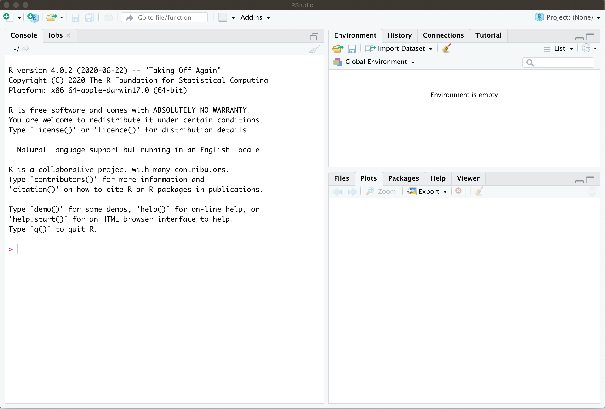
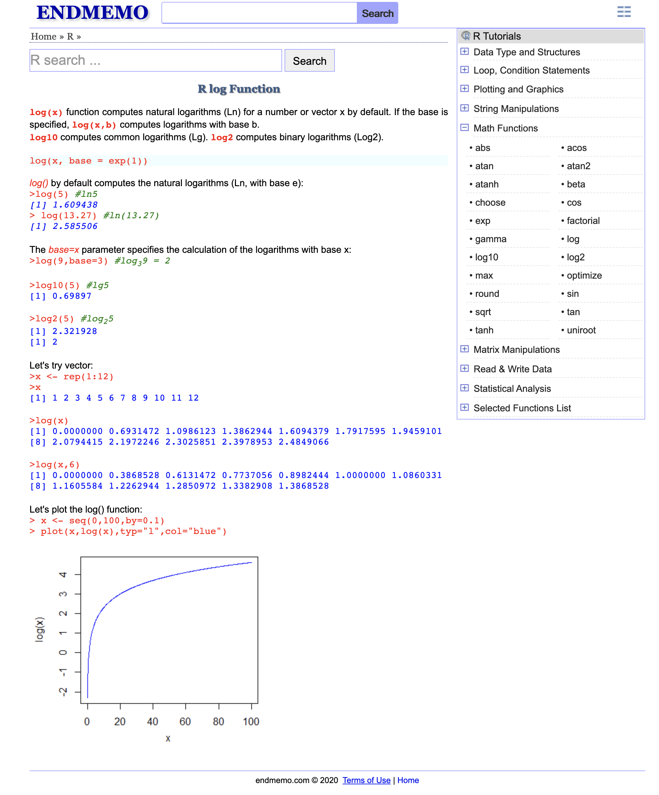

Chapter 1 An intro to R and RStudio
1.1 Setting up an R environment on your computer
1.1.1 Installing R
Learning basic R is an important part of this course, and the first order of business is to download and install an R distribution on your personal computer. We will be using RStudio as an IDE (integrated development environment). Like R itself, it is free and readily available for all major platforms. To download R to your computer, go to https://cloud.r-project.org and download the version of R for your operating system (Windows, Mac or Linux). If you are on a Mac, you want the “Latest release” which, at the time of writing, is 4.0.2. On Windows, follow the link “install R for the first time”. We are not going to do any cutting edge stuff in this class, so an older release should be fine, too, if you happen to have it already installed on your system. Once you download the installation file (.pkg on a Mac or .exe on Windows), run it and follow instructions. Once it is successfully installed, don’t run the installed app. We will use RStudio for that.
1.1.2 Installing RStudio
To install RStudio, go to https://rstudio.com/products/rstudio/download/ to get RStudio. There are several versions to choose from - the one your are looking for is “RStudio desktop - Free”. After you download and install it, you are ready to run it. When it opens, you will see something like this

The part on the left is called the console and that is one of the places where you enter commands. Before you do, it is important to adjust a few settings. Open the options window by pressing
Cmd+, (on a Mac) or navigate to Tools->Global Options (on Windows or Linux). In there, uncheck “Restore .RData into workspace on startup” and set “Save workspace to .RData on exit” to “Never”, as shown below:

This way, R will not pollute your environment with values you defined two weeks ago and completely forgot about. These settings are really an atavism and serve no purpose (for users like us) other than to introduce hard-to-track bugs.
There are many other settings you can play with in RStudio, but the two I mentioned above are the only ones that I really recommend setting as soon as you install it.
1.1.3 Installing basic packages
Finally, we need to install several R packages we will be using (mostly implicitly) during the class. First, run the following command in your console
This will install a number of useful packages and should only take about a minute or two. The next part is a bit longer, and can take up to 15 minutes if you have a slow computer/internet connection. You only have to do it once, though. Skip this step if you have LaTeX already installed on your system1. Start with
followed by
Note that the if you go to the top right corner of each of the code blocks (gray boxes) containing instructions above, an icon will appear. If you click on it, it will copy the content of the box into you clipboard, and you can simply paste it into RStudio. You can do that with any code block in these notes.
1.2 Learning the very basics of R
Once R and RStudio are on your computer, it is time to get acquainted with the basics of R. This class is not about the finer points of R itself, and I will try to make your R experience as smooth as possible. After all, R is a tool that will help us explore and understand stochastic processes. Having said (written) that, it is important to realize that R is a powerful programming language specifically created for statistical and probabilistic applications. Some knowledge of R is a valuable skill to have in today’s job market, and you should take this opportunity to learn it. The best way, of course, is by using it, but before you start, you need to know the very basics. Don’t worry, R is very user friendly and easy to get started in. In addition, it has been around for a long time (its predecessor S appeared in 1976) and is extremely well documented - google introduction to R or a similar phrase, and you will get lots of useful hits.
My plan is to give you a bare minimum in the next few paragraphs, and then to explain additional R concepts as we need them. This way, you will not be overwhelmed right from the start, and you will get a bit of a mathematical context as you learn more. Conversely, learning R commands will help with the math, too.
1.2.1 Ask for help

The most important thing about learning R (and many other things, for that matter) is knowing whom (and how) to ask for help. Luckily, R is a well established language, and you can get a lot of information by simply googling your problem. For example, if you google logarithm in R the top hit (at the time of writing) gives a nice overview and some examples (see screenshot on the right). I do not endorse or whatever-is-the-opposite-of-endorse this website (ENDMEMO). I don’t know anything about it, but it was the first hit, so I included it in these notes. The point is that googling should be the first thing you do.
Another way to get information about a command or a concept in R is to use the command help. For example, if you input help("log") in your console, the right hand of your screen will display information on the function log and some of its cousins. Almost every help entry has examples at the bottom, and that is where I always go first.
1.2.2 Vectors
1.3 Problems
Here are several simple problems. Their goal is to give you an idea of exactly how much R is required to get started in this course. Virtually any “introduction to R” should contain enough information to get you through all of these.
Problem 1.1 Compute the following (your answer should be a decimal number):
- \(1/238746238746\)
- \(2^{45}\)
- \(3^{28}\)
- \(\sqrt{15}\)
- \(\cos(\pi/8)\)
- \(e^2\)
- \(\log(2)\) (the base is \(e\))
- \(\log_{10}(2)\) (the base is \(10\))
- \(\sqrt[3]{ \frac{1342.16-2.18}{(3 \pi +4.12)^2}}\)
3.14e+13. If you do not know what that means, google E notation.
Problem 1.2 1. Define two variables \(a\) and \(b\) with values \(3\) and \(4\) and “put” their product into a variable called \(c\). Output the value of \(c\).
Define two vectors \(x\) and \(y\) of length \(3\), such that the components of \(x\) are \(1,2,3\) and the components of \(y\) are \(8,9,0\). Ouput their (componentwise) sum.
Define a \(2\times 2\) matrix \(A=\begin{pmatrix} 1 & 2 \\ -1 & 3 \end{pmatrix}\). Use the command
matrixand make sure to understand how it works; you can access its documentation directly from \(R\) by writing?matrix. Make sure you understand what the parametersncol,nrowandbyrowdo.Compute the matrix square \(A^2\) (Careful!
A*Awill output a \(2\times 2\) matrix, but it will not be \(A^2\) - it will be the matrix whose entries are the squares of the entries of \(A\). You need to use different notation.)
Problem 1.3
Write a function that takes an argument \(x\) and returns \(5\) if \(x\geq 5\) and \(x\) itself otherwise.
Write a function that returns
TRUE(a boolean value) if its argument is between \(2\) and \(3\) andFALSEotherwise.
Problem 1.4
Construct a vector \(x\) which contains all numbers from \(1\) to \(100\).
Construct a vector \(y\) which contains squares of all numbers between \(20\) and \(30\).
Construct a vector \(z\) the same size as \(y\) with boolean entries (i.e.,
TRUEorFALSE) that indicates whether the entry at the same position in \(y\) is above \(600\) or not. (This is much easier to do than it sounds.)
it may interfere with your existing installation↩︎